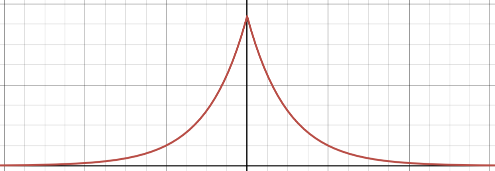

Delta Potential Well
Eigenstates of the Hamiltonian
Say that we have a particle moving in one dimension with the following potential: \[V(x)=-\gamma\delta(x), \gamma \gt 0\]Bound states. In this scenario, a bound state has \(E\lt 0\). In regions \(I\) and \(II\), the potential is, of course, always 0, which means that (1) becomes: \[\begin{align} -\frac{\hbar^2}{2m}\psi^"(x) &= E\psi(x) \\ \psi^"(x) &= -\frac{2mE}{\hbar^2}\psi(x) \\ \text{Say that } \beta &= \sqrt{\frac{-2mE}{\hbar^2}} \text{. Because } E\lt 0, \beta\in\mathbb{R} \text{, and:} \\ \psi^"(x) &= \beta^2\psi(x) \to \psi(x) = Ae^{\beta x} + Be^{-\beta x} \\ \psi(x) &= \begin{cases} \psi_{I}(x) = A_{I}e^{\beta x} + B_{I}e^{-\beta x} & x\lt 0\\ \psi_{II}(x) = A_{II}e^{\beta x} + B_{II}e^{-\beta x} & x\gt 0 \end{cases} \end{align}\] To ensure that \(\psi(x)\) is normalizable, we set \(A_{II}\) and \(B_{I}\) to 0, so that their corresponding terms do not blow up as \(x\to\pm\infty\). Now, we have \[\psi(x) = \begin{cases} \psi_{I}(x) = A_{I}e^{\beta x} & x\lt 0\\ \psi_{II}(x) = B_{II}e^{-\beta x} & x\gt 0 \end{cases}\] Because of this, we know that \(\psi(x)\) is bounded, and we can do the following: \[\begin{align} |\int_{-\epsilon}^{\epsilon} \psi(x)dx| \le \int_{-\epsilon}^{\epsilon} |\psi(x)|dx \lt 2\epsilon\max_{x\in(-\epsilon, \epsilon)} |\psi(x)| = o(\epsilon) \to 0 \end{align}\] which means that if we take the integral on both sides of (1), we get: \[\begin{align} E\psi(x) &= -\frac{\hbar^2}{2m}\psi^"(x) - \gamma\delta(x)\psi(x) \\ \int_{-\epsilon}^{\epsilon} E\psi(x) dx &= \int_{-\epsilon}^{\epsilon} -\frac{\hbar^2}{2m}\psi^"(x) - \gamma\delta(x)\psi(x) dx \\ E\int_{-\epsilon}^{\epsilon} \psi(x) dx &= -\frac{\hbar^2}{2m} \int_{-\epsilon}^{\epsilon} \psi^"(x) dx - \gamma\int_{-\epsilon}^{\epsilon}\delta(x)\psi(x) dx \\ o(\epsilon) &= -\frac{\hbar^2}{2m} (\psi'(\epsilon) - \psi'(-\epsilon)) - \gamma\int_{-\epsilon}^{\epsilon}\delta(x)\psi(x) dx \\ \text{As } \epsilon \to 0: \\ 0 &= -\frac{\hbar^2}{2m} (\psi'(0^+) - \psi'(0^-)) - \gamma\psi(0) \\ 0 &= -\frac{\hbar^2}{2m} (\psi'_{II}(0) - \psi'_{I}(0)) - \gamma\psi(0) \tag{2} \\ \end{align}\] Because the potential is described via the delta function, \(\psi'(x)\) must be discontinuous (which is why, unlike the other potential wells, we cannot impose the constraint where \(\psi'(x)\) is continuous). However, \(0 = -\frac{\hbar^2}{2m} (\psi'(0^+) - \psi'(0^-)) - \gamma\psi(0) \) tells us that \(\psi'(0^+) - \psi'(0^-)\) is finite, since \(\gamma\psi(0)\) is finite. This indicates that \(\psi(x)\) is continuous, even if its derivative is not.
We now have the following constraints:
\[\begin{align}
\begin{cases}
\psi_{I}(0) = \psi_{II}(0) & \text{since } \psi(x) \text{ has been shown to be conitnuous at } x=0 \\
-\frac{2m\gamma}{\hbar^2}\psi(0) = \psi'_{II}(0) - \psi'_{I}(0) & \text {from (2)}\\
\end{cases}
\end{align}\]
The first constraint tells us that:
\[\psi_{I}(0) = A_{I}e^{\beta 0} = \psi_{II}(0) = B_{II}e^{-\beta 0} \] \[A_{I} = B_{II}\] let's just call \(A_{I} = B_{II} = A\) so that \[\psi(x) = \begin{cases} \psi_{I}(x) = Ae^{\beta x} & x\lt 0\\ \psi_{II}(x) = Ae^{-\beta x} & x\gt 0 \end{cases} \] Then the second constraint becomes: \[-\frac{2m\gamma}{\hbar^2}A = - \beta A -\beta A\] \[-\frac{2m\gamma}{\hbar^2}A = -2\beta A\] \[\frac{m\gamma}{\hbar^2} = \beta \] We already have defined \(\beta\) as \(\sqrt{\frac{-2mE}{\hbar^2}}\), so: \[\sqrt{\frac{-2mE}{\hbar^2}} = \frac{m\gamma}{\hbar^2}\] \[E = -\frac{m\gamma^2}{2\hbar^2}\] And after enforcing that \(\langle\psi|\psi\rangle = 1\), we find that \(A = \sqrt{\beta}\). Thus we have \[\psi(x) = \begin{cases} \psi_{I}(x) = \sqrt{\beta}e^{\beta x} & x\lt 0\\ \psi_{II}(x) = \sqrt{\beta}e^{-\beta x} & x\gt 0 \end{cases} \] \[ \psi(x) = \sqrt{\beta}e^{-\beta|x|}, \beta = \frac{m\gamma}{\hbar^2}, E = -\frac{m\gamma^2}{2\hbar^2} \] Notice that there is only one possible value for \(E\) and of course, also for \(\beta\). This is because there is only one bound state (and it is evidently even, as the potential pulls equally on a particle some distance \(d\) away from the well, whether it be to the left or the right).This wavefunction looks something like:

Continuum states. Here, \(E\gt 0\), and each eigenvalue is doubly degenerate.
Again, we have that \[\begin{align} -\frac{\hbar^2}{2m}\psi^"(x) &= E\psi(x) \\ \psi^"(x) &= -\frac{2mE}{\hbar^2}\psi(x) \\ \end{align}\] but now, \(E\) is positive, meaning that \(-\frac{2mE}{\hbar^2}\) is negative. So, we instead say that \(k = \sqrt{\frac{2mE}{\hbar^2}}\) (note that because we're working with continuum/generalized eigenstates, \(k\) is not quantized) and apply the closed form solution: \[\psi(x) = Ae^{ikx} + Be^{-ikx}\] Splitting over regions \(I\) and \(II\): \[\psi(x) = \begin{cases} \psi_{I}(x) = A_{I}e^{ikx} + B_{I}e^{-ikx} & x\lt 0 \\ \psi_{II}(x) = A_{II}e^{ikx} + B_{II}e^{-ikx} & x\gt 0 \end{cases}\] But we cannot cancel any term; generalized eigenstates are not normalizable anyway. We do, though, have the same constraints as before: \[\begin{align} \begin{cases} \psi_{I}(0) = \psi_{II}(0) \\ -\frac{2m\gamma}{\hbar^2}\psi(0) = \psi'_{II}(0) - \psi'_{I}(0) \\ \end{cases} \end{align}\] and because the potential is even, we know that \([\hat \Pi, \hat H] = 0\), and we can thus classify eigenstates into even or odd functions. Let's first consider the odd eigenfunctions.An odd function \(\psi_o(x)\) will behave as \(\psi_o(-x) = -\psi_o(x)\). For \(x=0\), then: \(\psi_o(0) = -\psi_o(0)\), which tells us that \(\psi_o(0) = 0\). This makes our second constraint become: \[\begin{align} 0 &= \psi'_{II}(0) - \psi'_{I}(0) \\ \psi'_{II}(0) &= \psi'_{I}(0) \end{align}\] which then tells us that \(A_{I} - B_{I} = A_{II} - B_{II}\). And, our first constraint remains unchanged and tells us that \(A_{I} + B_{I} = A_{II} + B_{II}\). Treating these two results as a system of equations, we get that \(A_{I} = A_{II} = A\), and that \(B_{I} = B_{II} = B\). Our wavefunction looks like: \[\psi(x) = \begin{cases} \psi_{I}(x) = Ae^{ikx} + Be^{-ikx} & x\lt 0 \\ \psi_{II}(x) = Ae^{ikx} + Be^{-ikx} & x\gt 0 \end{cases}\] Now, we can again use that \(\psi_o(-x) = -\psi_o(x)\). For some \(x\gt 0\), \(\psi_o(-x) = \psi_I(-x)\), since \(\psi_I(x)\) is defined for all \(x\lt 0\), and \(-\psi_o(x) = -\psi_{II}(x)\). Note that we could have used \(x\lt 0\) and gotten the exact same result, since at this point, \(\psi_{I}(x)\) and \(\psi_{II}(x)\) are identical. \[\begin{align} \psi_I(-x)\ &= -\psi_{II}(x) \\ Ae^{ik(-x)} + Be^{-ik(-x)} &= -(Ae^{ikx} + Be^{-ikx}) \\ Ae^{-ikx} + Be^{ikx} &= -(Ae^{ikx} + Be^{-ikx}) \\ -Ae^{-ikx} - Be^{ikx} &= Ae^{ikx} + Be^{-ikx} \end{align}\] For \(x\gt 0\) (and \(x\lt 0\)) \(\psi_o(x) = Ae^{ikx} + Be^{-ikx}\), so the LHS of the above equation is \(\psi_o(x)\): \[\begin{align} -Ae^{-ikx} - Be^{ikx} &= Ae^{ikx} + Be^{-ikx} = \psi_o(x) \\ \psi_o(x) &= -A(\cos(kx)-i\sin(kx)) -B (\cos(kx)+i\sin(kx)) \\ \end{align}\] If \(\psi_o(0) = 0\), then \(A+B=0\), or \(A = -B\), hence: \[\begin{align} \psi_o(x) &= -A(\cos(kx)-i\sin(kx)) + A (\cos(kx)+i\sin(kx)) \\ &= -A\cos(kx) +Ai\sin(kx) + A\cos(kx) + Ai\sin(kx) \\ &= 2Ai\sin(kx) \\ \end{align}\] You can normalize this to find A.
Now we look at the (slightly) more complicated case of the even eigenfunctions. In class, we "act with insight" and say that we can write the even function as \(\psi_e(x) = A\cos(kx+\phi)\) for some phase factor \(\phi\) right away. I don't really want to do that; this is the method I used:
The first constraint still tells us that \(A_{I} + B_{I} = A_{II} + B_{II}\). Even function \(\psi_e(x)\) behaves like \(\psi_e(x)=\psi_e(-x)\), which means that for \(x \gt 0\): \[\begin{align} \psi_{I}(-x) &= \psi_{II}(x) \\ A_{I}e^{ik(-x)} + B_{I}e^{-ik(-x)} &= A_{II}e^{ikx} + B_{II}e^{-ikx} \\ A_{I}e^{-ikx} + B_{I}e^{ikx} &= A_{II}e^{ikx} + B_{II}e^{-ikx} \\ A_{I}(\cos(kx)-i\sin(kx)) + B_{I}(\cos(kx)+i\sin(kx)) &= A_{II}(\cos(kx)+i\sin(kx)) + B_{II}(\cos(kx)-i\sin(kx)) \\ (A_{I} + B_I)\cos(kx) + (B_{I}-A_I)i\sin(kx) &= (A_{II} + B_{II})\cos(kx) + (A_{II}-B_{II})i\sin(kx) \\ (A_{I} + B_I)\cos(kx) + (B_{I}-A_I)i\sin(kx) &= (A_{I} + B_{I})\cos(kx) + (A_{II}-B_{II})i\sin(kx) \\ (B_{I}-A_I)i\sin(kx) &= (A_{II}-B_{II})i\sin(kx) \\ B_{I}-A_I &= A_{II}-B_{II} \\ \end{align}\] This result, along with \(A_{I} + B_{I} = A_{II} + B_{II}\), tells us that \(A_{II}=B_{I}\) and \(B_{II}=A_I\). Call these \(C_1\) and \(C_2\) respectively: \[\psi(x) = \begin{cases} \psi_{I}(x) = C_2e^{ikx} + C_1e^{-ikx} & x\lt 0 \\ \psi_{II}(x) = C_1e^{ikx} + C_2e^{-ikx} & x\gt 0 \end{cases}\] Using the second constraint, we can determine what the ratio \(\frac{C_2}{C_2}\) is: \[\begin{align} -\frac{2m\gamma}{\hbar^2}\psi(0) &= \psi'_{II}(0) - \psi'_{I}(0) \\ -\frac{2m\gamma}{\hbar^2}(C_1+C_2) &= ikC_1-ikC_2 - (ikC_2-ikC_1) \\ -\frac{2m\gamma}{ik\hbar^2}(C_1+C_2) &= C_1-C_2 - (C_2-C_1) \\ -\frac{2m\gamma}{ik\hbar^2}C_1-\frac{2m\gamma}{\hbar^2}C_2 &= 2C_1 - 2C_2 \\ 2C_2 - \frac{2m\gamma}{ik\hbar^2}C_2 &= 2C_1 + \frac{2m\gamma}{ik\hbar^2}C_1 \\ C_2(2 - \frac{2m\gamma}{ik\hbar^2}) &= C_1(2 + \frac{2m\gamma}{ik\hbar^2}) \\ \frac{C_2}{C_1} &= \frac{2 + \frac{2m\gamma}{ik\hbar^2}}{2 - \frac{2m\gamma}{ik\hbar^2}} \\ &= \frac{1 + \frac{m\gamma}{ik\hbar^2}}{1 - \frac{m\gamma}{ik\hbar^2}} \end{align}\] It turns out that \(\frac{C_2}{C_2}\) has a squared modulus of 1: \[\begin{align} |\frac{1 + \frac{m\gamma}{ik\hbar^2}}{1 - \frac{m\gamma}{ik\hbar^2}}|^2 = |\frac{ik\hbar^2 + m\gamma}{ik\hbar^2 - m\gamma}|^2 &= \frac{ik\hbar^2 + m\gamma}{ik\hbar^2 - m\gamma} \frac{-ik\hbar^2 + m\gamma}{-ik\hbar^2 - m\gamma} = \frac{ik\hbar^2 + m\gamma}{ik\hbar^2 - m\gamma} \frac{-(ik\hbar^2 - m\gamma)}{-(ik\hbar^2 + m\gamma)} \\ &= \frac{-1}{-1} = 1 \end{align}\] For \(\frac{C_2}{C_2}\) to have a squared modulus of 1, the modulus of \(C_2\) and \(C_1\) must be the same. We can also say that \(C_2\) and \(C_1\) have the same real component, 1, and opposite imaginary components, \(\pm \frac{m\gamma}{ik\hbar^2}\). We can then visualize them as vetors on the complex plane with equal length, but opposite angles with respect to the real axis:
Scattering States
We now know that the generalized eigenstates are \[\psi_o(x) = 2A_oi\sin(kx)\] \[\psi_e(x) = 2A_e\cos(\phi+k|x|), \phi = \arctan(m\gamma/k\hbar^2)\] which we can write in slightly different, but equivalent forms: \[ \psi_o(x) = A_oe_{ikx} - A_oe^{-ikx} \] \[ \psi_e(x) = A_e e^{ik|x|+i\phi} + A_e e^{-ik|x|-i\phi} \] and when split over regions \(I\) and \(II\):| Region \(I\), \(x \lt 0\) | Region \(II\), \(x \gt 0\) | |
| ODD | \(A_oe_{ikx} - A_oe^{-ikx}\) | \(A_oe_{ikx} - A_oe^{-ikx}\) |
| EVEN | \(A_e e^{-ikx+i\phi} + A_e e^{ikx-i\phi}\) | \(A_e e^{ikx+i\phi} + A_e e^{-ikx-i\phi}\) |
When we have a particle coming from the left of the potential well (meaning it is at some \(x \lt 0\)) which is moving to the right, we can represent this as a right-moving plane wave, so \(e^{ikx}\).
For a little more intuition on why this is, I guess you need to know more wave mechanics... do I? Not really. But using what we've learned in this course alone: over time, the isolated system evolves according to the time evolution operator \(\hat U(t) = e^{-i\hat H t/\hbar}\), and acting on our wavefunction, it gives: \[\begin{align} \langle x | e^{-i\hat H t/\hbar} | \psi\rangle &= \langle x | e^{-i E t/\hbar} | \psi\rangle \\ &= e^{-i E t/\hbar}\psi(x) \\ &= e^{-i E t/\hbar}e^{ikx} = e^{-i(E t/\hbar+kx)} \\ &= \cos(E t/\hbar+kx) - i\sin(E t/\hbar+kx) \end{align}\] which has a squared modulus of \(\cos^2(E t/\hbar+kx) - \sin^2(E t/\hbar+kx)\). If you plot this, you can see that as \(t\) increases, the peaks of this curve move to the right...The flux or so-called probability current of \(e^{ikx}\) is \(|e^{ikx}|^2=1\) and apparently tells you how probability density changes over time. In this case, the probability density is uniform; it is equally likely to be at any point in space where \(x \lt 0\), and it is positive, so moving to the right, meaning the expected value of the particle moves right over time.
When the particle approaches \(x=0\), it can either be reflected so that it moves back to the left, or transmitted over \(x=0\) so that it continues to move to the right. The Wikipedia article on the delta potential well is actually a nice place to look more into this, but in broad strokes:
- After transmission, the particle is still moving to the right. However, there is not a uniform probability distribution, because there is also a chance that it was reflected, and instead moves to the left. As such, we can write \(Te^{ikx}\), where \(T\) is the transmission coefficient that describes the likelihood of being transmitted instead of reflected. We find that \(T = \frac{1+e^{2i\phi}}{2}\), so that the flux is \(|T|^2 = \cos^2(\phi) = \frac{1}{1+(\frac{m\gamma}{\hbar k^2})^2}\)
- Similarly, for reflection coefficient \(R\), we can write \(Re^{ikx}\). We can find that \(R = \frac{e^{2i\phi}-1}{2}\) so that the flux is \(|R|^2 = \sin^2(\phi) = \frac{1}{1+(\frac{\hbar k^2}{m\gamma})^2}\).